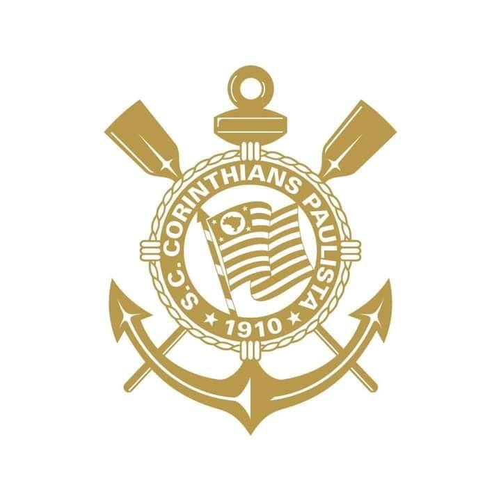

- Diretoria do timão:DUILIO MONTEIRO ALVES
Presidente da Diretoria
ELIE WERDO
1ª Vice-Presidente da Diretoria
LUIZ WAGNER ALCANTARA
2º Vice-Presidente da Diretoria
ADRIANO NOCCIOLI MONTEIRO ALVES
Secretario Geral
EDUARDO CAGGIANO FREITAS
Diretor Administrativo
ANDRÉ LUIS CARRIJO FERREIRA
Diretor Cultural
SILVIO ROMOALDO JUNIOR
Diretor de Esportes Aquáticos
CARLOS HENRIQUE ROS SALAS DE LIMA
Diretor de Esportes Terrestres
WESLEY LUCIO CAVALCANTE DE MELO
Diretor de Finanças
ROBERTO DE ANDRADE SOUZA
Diretor de Futebol
OSVALDO GOMES CORRÊA NETO
Diretor de Futebol de Base
HERÓI JOÃO PAULO VICENTE
Diretor de Negócios Jurídicos
LEANDRO MARTINS DA SILVA
Diretor de Patrimônio e Obras
ANTONIO GOULART DOS REIS
Diretor de Relações Institucionais
SÉRGIO COELHO MONTES
Diretor Social
- Cuca foi anunciado como novo treinador do timao nessa semana!!..
A história do timão
Sport Club Corinthians Paulista é um clube poliesportivo brasileiro da cidade de São Paulo, capital do estado de São Paulo. Foi fundado como uma equipe de futebol no dia 1 de setembro de 1910 por um grupo de operários do bairro Bom Retiro. Seu nome foi inspirado no Corinthian FC de Londres, que excursionava pelo Brasil.
Embora tenha atuado em outras modalidades esportivas ao longo dos anos, seu reconhecimento e suas principais conquistas foram alcançados no futebol. O clube é um dos mais bem sucedidos do Brasil e das Américas nos últimos anos. É o terceiro maior campeão nacional, com onze conquistas, ficando atrás somente do Palmeiras (17 conquistas) e Flamengo (14 conquistas). Conquistou dois Mundiais de Clubes da FIFA,uma Copa Libertadores da América de forma invicta, uma Recopa Sul-Americana, sete Campeonatos Brasileiros,três Copas do Brasil,uma Supercopa do Brasil, cinco Torneios Rio-São Paulo (recordista, ao lado de Palmeiras e Santos), 30 Campeonatos Paulistas (atual recordista) e uma Copa Bandeirantes (único vencedor).
Suas cores tradicionais são o branco e o preto. Desde 2014, manda suas partidas de futebol na Neo Química Arena. Seus rivais históricos são o Palmeiras, com quem disputa o Derby Paulista; o São Paulo, com quem disputa o Majestoso; e o Santos, com quem disputa o Clássico Alvinegro. Sua torcida é conhecida como "Fiel" e seus torcedores são estimados em aproximadamente 30 milhões espalhados por todo o Brasil e pelo mundo, atrás nacionalmente somente do carioca Flamengo. a sua torcida é considerada também uma das maiores torcidas do mundo.
De modalidades esportivas importantes ao longo da história corintiana,destacam-se o basquete, onde o clube desfrutou de relativo sucesso, especialmente durante as décadas de 1950 e 1960, com a conquista de títulos paulistas, brasileiros e até sul-americanos, a natação que rendeu quatro conquistas do Troféu Brasil de Natação, atual Troféu Maria Lenk, e o futsal, a partir da década de 1970, que rendeu conquistas em torneios estaduais e nacionais. A influência do remo na história do clube modificou o escudo original, que aludia meramente ao futebol, com o acréscimo do par de remos e da âncora como aparecem até os dias de hoje.
O mundial de 2012
Há exatos 10 anos, no dia 16 de dezembro de 2012, o Corinthians conquistava o seu segundo Mundial de Clubes da Fifa, ao bater o Chelsea por 1 a 0, em Yokohama.
Corinthians 1 x 0 Chelsea
Data: 16 de dezembro de 2012
Gol: Guerrero, aos 23 minutos do segundo tempo
Público: 68.275 pagantes
Cássio; Alessandro, Chicão, Paulo André e Fábio Santos; Ralf e Paulinho; Jorge Henrique, Danilo e Emerson (Wallace); Guerrero (Martínez). Técnico: Tite.
Cássio brilhou nos 90 minutos contra o Chelsea. Fechou o gol e evitou qualquer tipo de susto para o Corinthians. Na frente, coube a Guerrero decidir. Aos 23 minutos do 2º tempo, Danilo finalizou, a bola passou por Cech e sobrou para o peruano cabecear para o fundo da rede. Explosão da Fiel no Japão, no Brasil e no mundo todo.
Tite, maestro das conquistas em 2012, fez o time se segurar. O 1 a 0 seguiu até o fim do jogo, com festa do Corinthians, campeão mundial.Cássio,com defesas incríveis, foi eleito o melhor do jogo. Há dez anos, o mundo se pintava de preto e branco.